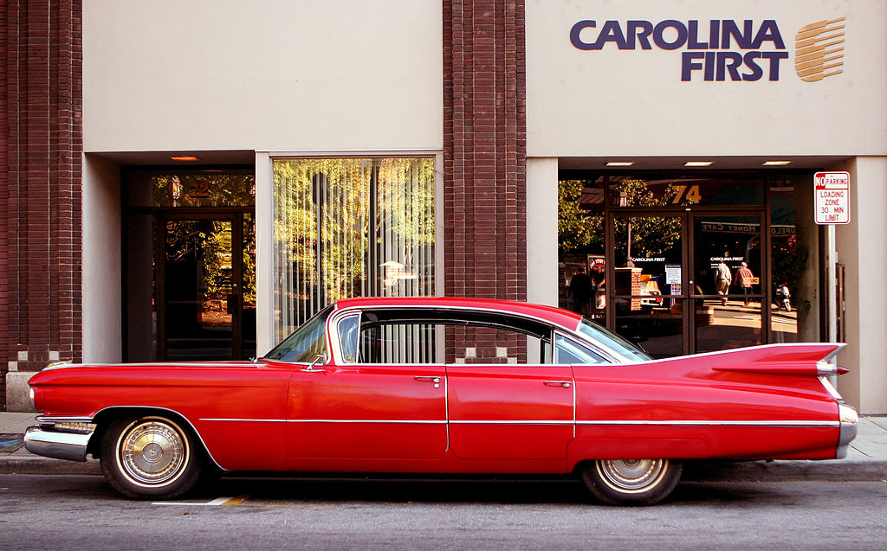

Автомоби́ль (от др.-греч. αὐτο — сам и лат. mobilis — движущийся), автотранспортное средство, в совокупности авто-техника, автотранспорт — моторное безрельсовое дорожное транспортное средство минимум с 3 колёсами.
Основное функциональное назначение автомобиля заключается в совершении транспортной работы. Автомобильный транспорт в индустриально развитых странах занимает ведущее место по сравнению с другими видами транспорта по объему перевозок пассажиров и грузов.

Cadillac модели 1959 года — один из символов автомобиля середины XX в.
Современный автомобиль состоит из 15—20 тысяч деталей, из которых 150—300 являются наиболее важными и требующих наибольших затрат в эксплуатации.
Термин включает легковой автомобиль, грузовой автомобиль, автобус, троллейбус, бронетранспортёр, но не включает сельскохозяйственный трактор и мотоцикл.